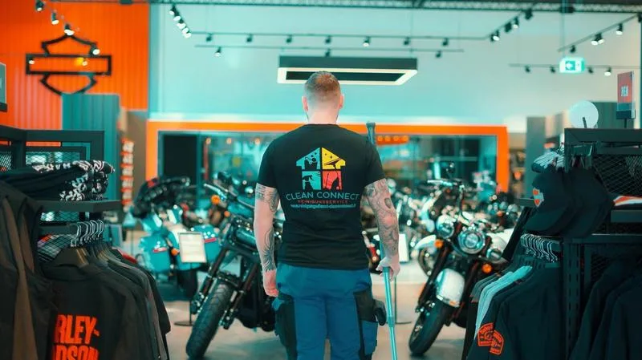

Teppichreinigung in Bergisch Gladbach
Teppichböden halten Staub und Gerüche fest, auch wenn regelmäßig gesaugt wird. Wir reinigen Teppichböden in Bergisch Gladbach mit Sprühextraktion und behandeln Flecken gezielt.
Teppichreinigung in Bergisch Gladbach: was vor Ort zählt
In Bergisch Gladbach sitzen viele kleinere Büros, Kanzleien und Praxen in der Stadtmitte und in Bensberg, oft in umgebauten Wohnhäusern mit mehreren Etagen. In Büros reinigen wir Teppichböden meist am Wochenende oder in den Ferien, damit sie bis zum nächsten Arbeitstag trocken sind.
Refrath, Frankenforst und Moitzfeld sind ruhige Wohnlagen mit vielen Eigentümergemeinschaften, bei denen Treppenhaus, Keller und Außenanlagen regelmäßig gepflegt werden müssen. Bei Teppichen in Treppenhäusern und Fluren von Wohnanlagen arbeiten wir abschnittsweise, damit die Bewohner durchkommen.
Die Fußgängerzone in der Stadtmitte und das Zentrum von Bensberg leben von inhabergeführten Geschäften, bei denen das Schaufenster die Visitenkarte ist. In Ladenlokalen und Empfangsbereichen sieht man Laufstraßen auf dem Teppich zuerst; die reinigen wir gezielt nach.
Bergisch Gladbach beginnt praktisch an unserer Haustür: Dellbrück grenzt an Refrath. Die Stadtmitte, Bensberg und Paffrath sind von unserem Büro nur wenige Minuten entfernt.
Mehr über Bergisch Gladbach
Bergisch Gladbach ist für uns der nächste Ort überhaupt: Zwischen unserem Büro und Refrath liegt nur die Stadtgrenze.
Die Papierherstellung hat Bergisch Gladbach geprägt; heute sind es eher Handwerk, Handel und Dienstleistung in den Gewerbegebieten am Stadtrand.

Darauf können Sie sich in Bergisch Gladbach verlassen
Kurze Trockenzeit
Nach wenigen Stunden wieder begehbar.
Mit Unterhaltsreinigung kombinierbar
Als Zusatzleistung im laufenden Vertrag.
Allergiker-freundlich
Tiefenreinigung holt Staub und Pollen aus den Fasern.
Ehrliche Einschätzung
Wir sagen vorher, welche Flecken rausgehen.
Leistungsumfang
- Teppichböden in Büros und Fluren
- Laufstraßen und Eingänge
- Fleckenbehandlung
- Treppenteppiche
- Schmutzfangmatten
- Geruchsneutralisierung
So läuft es ab
- Besichtigung oder Fotos
- Probe an einer Stelle
- Angebot nach Fläche
- Reinigung außerhalb der Nutzungszeit
- Kontrolle nach dem Trocknen
Rechner: Teppichreinigung in Bergisch Gladbach
Preise
Teppichreinigungen bieten wir nach Fläche und Verschmutzung an. Zusammen mit einer laufenden Unterhaltsreinigung wird es meist günstiger. Alle Preise ansehen
Einsatzgebiet Bergisch Gladbach
Häufige Fragen: Teppichreinigung in Bergisch Gladbach
Sind Sie für Teppichreinigung auch in Frankenforst, Gronau und Heidkamp im Einsatz?
Ja. Teppichreinigung bieten wir im ganzen Stadtgebiet von Bergisch Gladbach an, auch in Frankenforst, Gronau, Heidkamp und Hebborn. Bergisch Gladbach beginnt praktisch an unserer Haustür: Dellbrück grenzt an Refrath. Die Stadtmitte, Bensberg und Paffrath sind von unserem Büro nur wenige Minuten entfernt.
Wie schnell können Sie in Bergisch Gladbach anfangen?
Bergisch Gladbach liegt rund 5 km Luftlinie von unserem Büro in Köln-Dellbrück entfernt. Eine Besichtigung ist meist innerhalb weniger Tage möglich, die Anfahrt ist im Preis enthalten.
Hilft die Reinigung gegen Allergene?
Sprühextraktion holt Staub, Milbenrückstände und Pollen aus den Fasern, besser als normales Saugen.
Wie lange braucht der Teppich zum Trocknen?
Meist vier bis sechs Stunden, je nach Teppich, Lüftung und Temperatur.
Gehen alle Flecken raus?
Die meisten ja. Alte oder eingefärbte Flecken lassen sich manchmal nur aufhellen; das sagen wir vorher ehrlich.
Weitere Leistungen in Bergisch Gladbach
Angebot für Teppichreinigung in Bergisch Gladbach anfordern
Eine kurze Nachricht mit Objekt und Anliegen genügt, Sie bekommen innerhalb von 24 Stunden eine Rückmeldung.
Kostenloses Angebot →